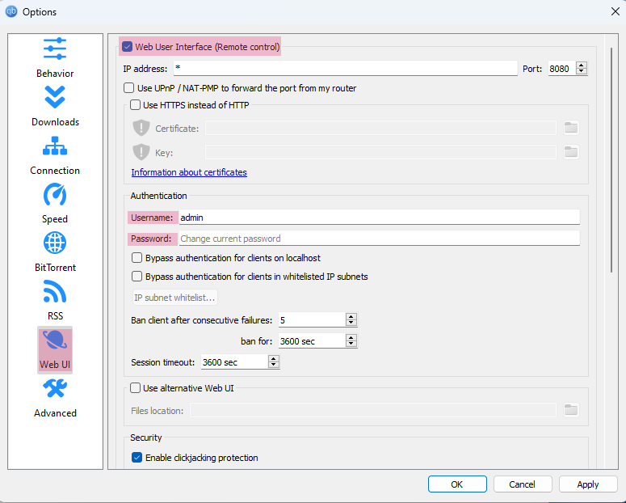
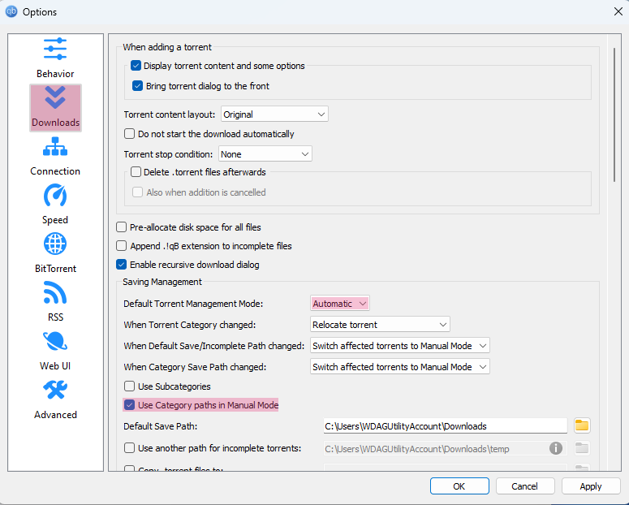
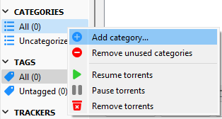
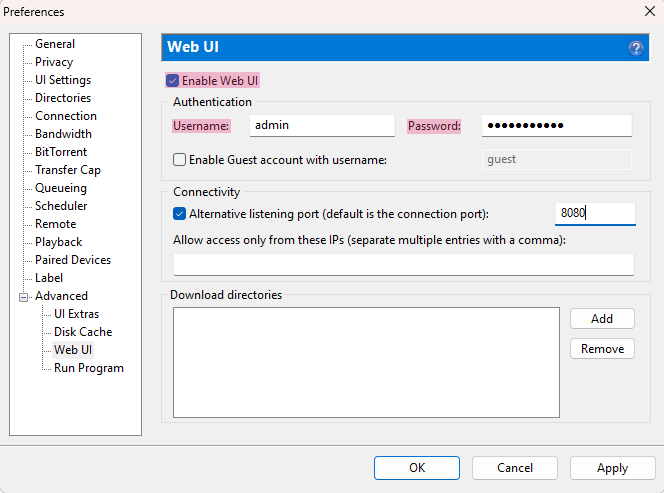
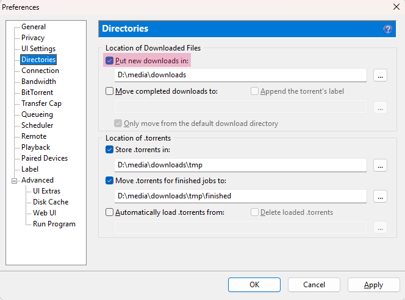

Add Torrent To Help
Send torrents straight to the right folder of your torrent client
How it works
Add Torrent To sends torrent files and magnet links to the web interface of qBittorrent or µTorrent with a single click, directly into the folder or category you choose. This keeps the download folder of the client tidy and saves you from moving files around afterwards.
Right-click a link to a .torrent file or a magnet link, open the
Add Torrent To submenu, and pick a destination. The client starts the
download right away.
Clicking the toolbar button of the add-on opens the web interface of your torrent client.
Adding many torrents at once
To send several torrents at once, right-click anywhere on a page and choose Add Torrent To › Bulk Add…. The dialog lists every link on the page. Check the ones you want, or type a filter to narrow the list; links that match a filter are checked for you.
- A filter can be any part of a link, such as
.torrentormagnet:. In wildcards,*stands for any number of characters and?for a single one, as indl.php?id=*. For more control, turn on Regular expression and write something like\.torrent$. - The buttons next to the filter set what it is matched against: the
Text of a link, its URL, or
Both. On many trackers, a download address does not end with
.torrent, while the link text does. - Uncheck anything you don't need, pick a destination on the right, and click Add.
The dialog then shows how each link went, including torrents the client already has. Retry failed sends the failed ones again. Closing the dialog doesn't stop the job; the remaining torrents are still added. Your last filter is kept for next time.
Opening the settings
- Right-click the toolbar button of the add-on and choose Settings.
- Or open the settings of Add Torrent To from the add-ons page of the browser.
Until the web interface address is set, the toolbar button opens the settings instead of the client.
All changes in the settings are saved immediately; there is nothing to confirm.
Connecting to the client
- Enable the web interface in the settings of your torrent client, and set a user name and password there (see the client sections below).
- In the add-on settings, choose your client, enter the address of its web interface, and the same user name and password.
- Click Test connection. “Connected” means the add-on can reach the client and sign in.
The address usually looks like http://localhost:8080/ for qBittorrent and
http://localhost:8080/gui/ for µTorrent. Use the address and port that are set in the
client.
Download destinations
The Download destination setting decides what the items of the Add Torrent To menu are and how the client understands them. There are three types.
Folders
qBittorrent and µTorrentEach name is a subfolder of the default download folder of the client. For example,
with the default folder D:\Downloads, choosing Movies saves the
torrent to D:\Downloads\Movies.
Default location saves the torrent to the default download folder itself. Use the + Default location button to add it if it is missing.
Choose this type if all you need is to sort downloads into subfolders. It needs no setup in the client.
Categories
qBittorrent onlyEach name you type is sent to qBittorrent as a category. The torrent is labelled with that category, and qBittorrent saves it to the folder configured for the category, which can be anywhere, even on a different drive.
Type the names exactly as they appear in qBittorrent. Choose this type when you want to pick and order only some of your qBittorrent categories, or mix them with separators. qBittorrent has to be set up to use category folders (see below).
From client
qBittorrent onlyThe add-on loads the list of categories from qBittorrent itself, so the menu always matches the client. You can't edit or reorder this list in the add-on: add, remove, or rename categories in qBittorrent.
The list is loaded when the browser starts. If qBittorrent was not running then, or you
changed its categories later, choose [refresh] at the end of the
Add Torrent To menu, or click
Refresh from client in the settings.
As with Categories, qBittorrent has to be set up to use category folders.
Editing the list
- Type a name and press Enter to add it.
- Click × on an item to remove it, or press ⌫ in the empty input to remove the last one.
- Drag items to change their order in the menu. With the keyboard, focus an item and press Alt+← or Alt+→.
- Add
-as an item to put a separator line into the menu at that place. - Names can't contain a colon (
:).
The Context menu preview under the list shows what the menu will look like.
Notifications
The add-on shows a system notification after it sends a torrent: Always reports both successes and errors, On failure reports only errors, and Never stays quiet.
If nothing seems to happen after adding a torrent, look for a notification in the notification area of your system, and make sure notifications from the browser are allowed.
Setting up qBittorrent
Open Tools › Options › Web UI, enable the web user interface, and set a
user name and password. You can also let qBittorrent skip authentication for clients on
localhost or your local network. If IPv6 is enabled in your router, add your IPv6 subnet to the
list as well, for example fe80::/64.

To use the Categories or From client types, let qBittorrent save torrents to category folders. In Options › Downloads, do one of the following:
- Set Default Torrent Management Mode to Automatic, or
- Turn on Use Category paths in Manual Mode.

To create a category and set its folder, right-click Categories in the qBittorrent sidebar.

Setting up µTorrent
Open Options › Preferences › Advanced › Web UI, enable the web interface, and set a user name and password.

Set the default download folder in Preferences › Directories. The Folders you add in the add-on are subfolders of it.

µTorrent supports only the Folders type: its web interface does not let add-ons use its labels.